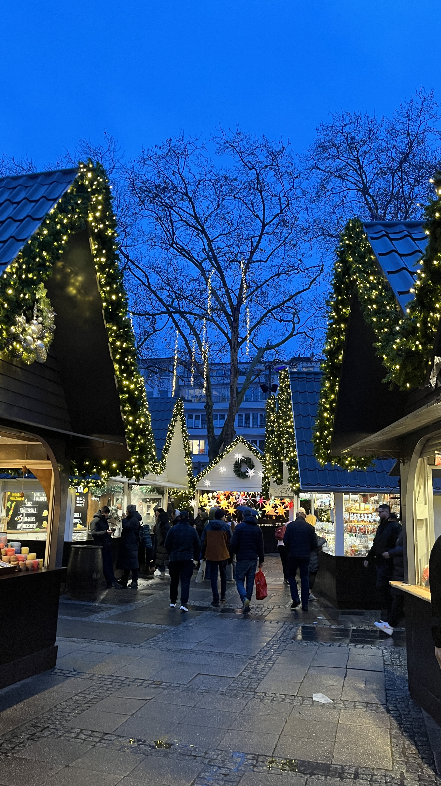
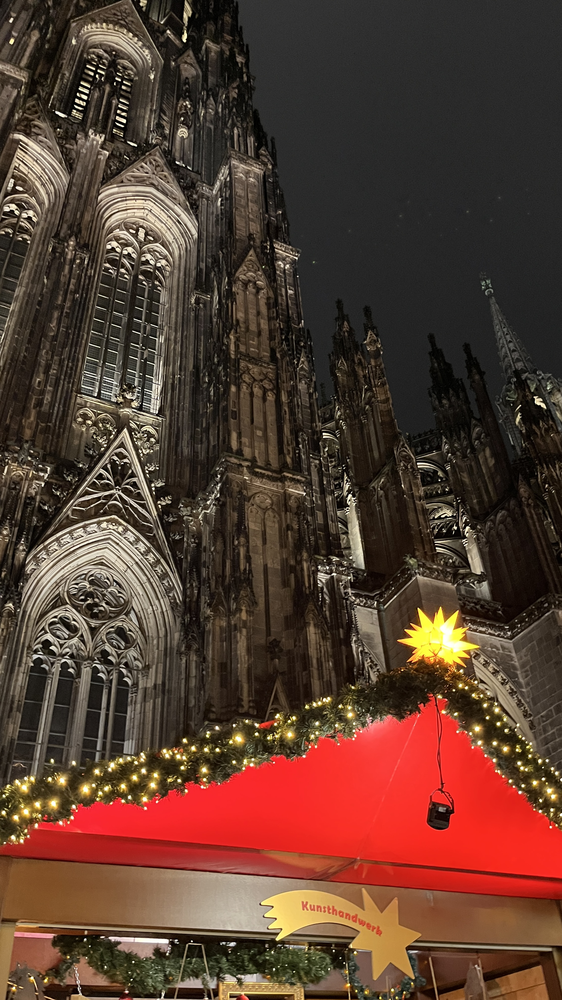
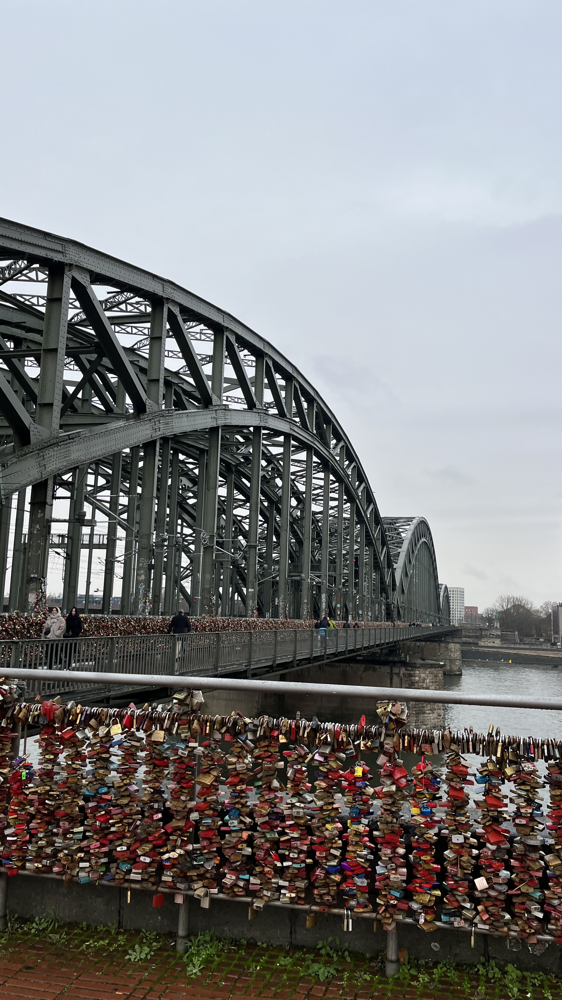
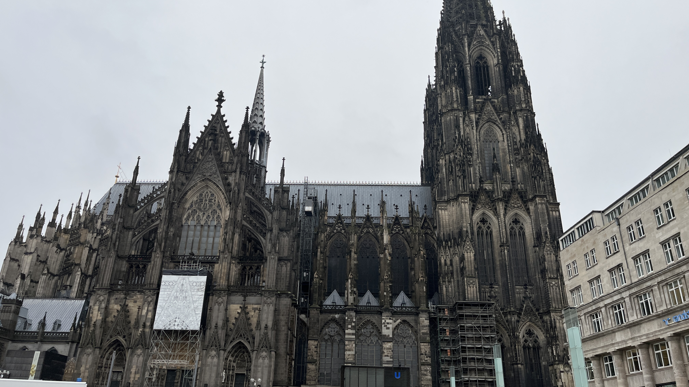

Düsseldorf, Bochum ve Köln şehirlerinde geçirdiğim günlerden notlar.
| Şehir | Gün Sayısı | Beğeni (1-10) |
|---|---|---|
| Düsseldorf | 2 | 7 |
| Bochum | 5 | 6 |
| Köln | 1 | 6 |
Ren Nehri kıyısında yürümek ve Altstadt’ın dar sokaklarında kaybolmak için harika bir seçim.
Yanında kaldığım aile Bochumda yaşadığı için Bochumda daha çok zaman geçirdim. Sakin bir şehir deneyimi yaşadım.
Köln Katedrali ve çevresi gezimin en turistik noktalarıydı.
   